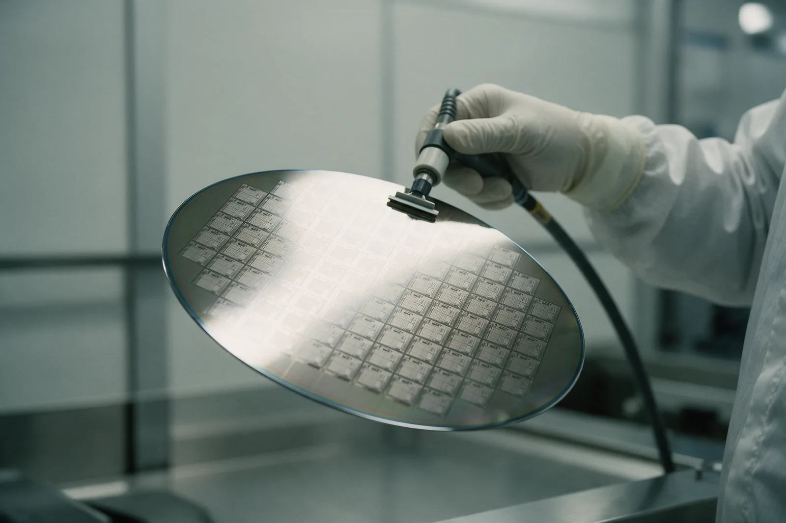
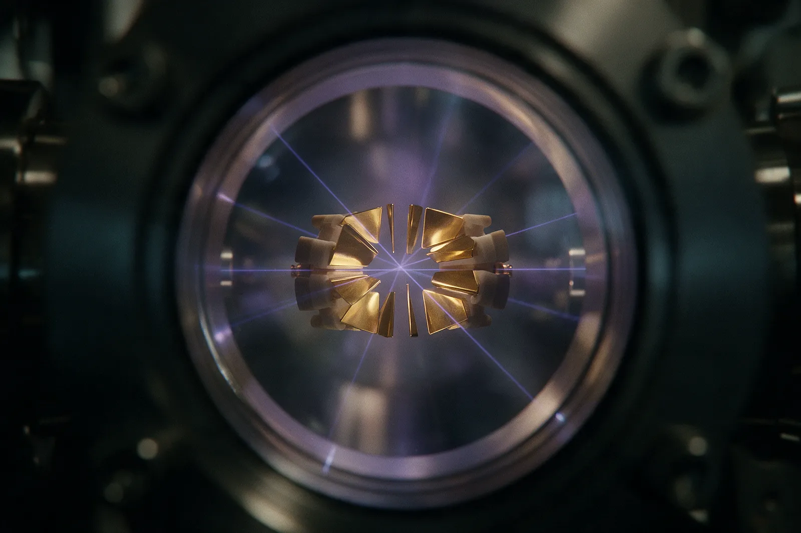

Cinco algoritmos concentran casi todo lo que se puede prometer. Dos tienen
aceleración bien fundamentada, uno es cuadrático y casi nunca compensa, y dos no tienen
ninguna.
Conviene separar tres regímenes. Primero, las
aceleraciones superpolinómicas frente al mejor algoritmo clásico conocido: Shor, para
factorizar y para el logaritmo discreto, y la simulación de sistemas cuánticos mediante
estimación de fase. Segundo, la cuadrática, demostrablemente óptima: Grover. Tercero,
las heurísticas sin garantía: VQE y QAOA.
Que no todo se acelere está en el mecanismo, no en el hardware. Una superposición de 2ⁿ
estados no son 2ⁿ resultados legibles: la medición devuelve uno solo. La ventaja aparece
cuando el algoritmo organiza interferencias que cancelan las ramas incorrectas y
refuerzan la correcta, y eso exige estructura explotable: periodicidad en Shor,
estructura de grupo en la estimación de fase, localidad en la simulación hamiltoniana.
Sin ella solo queda la búsqueda, y ahí Bennett, Bernstein, Brassard y Vazirani
demostraron en que la cota es ajustada: Grover es
óptimo.
Tabla 1 — Qué acelera cada algoritmo y qué haría falta para que fuera útil
Algoritmo
Qué acelera
Aceleración real
Qué haría falta
Grover
Búsqueda en un conjunto sin estructura aprovechable.
Cuadrática, y demostrablemente óptima.
Que la corrección de errores dejara de multiplicar el tiempo por una constante enorme. Babbush y colaboradores (2021) sostienen que lo cuadrático no cruza el umbral de utilidad en las primeras máquinas tolerantes a fallos.
Shor
Factorización de enteros y logaritmo discreto.
Superpolinómica frente al mejor algoritmo clásico conocido. No es una separación demostrada.
Menos de 1.000.000 de cúbits físicos ruidosos durante menos de una semana, para RSA-2048 (Gidney, 2025).
Simulación hamiltoniana
Evolución de un sistema cuántico bajo su hamiltoniano: química y materiales.
Exponencial frente a los métodos clásicos exactos. Frente a los aproximados, mucho menos.
Unos 4.000.000 de cúbits físicos y menos de 4 días para el cofactor FeMo de la nitrogenasa (Lee y colaboradores, 2021).
VQE
Energía del estado fundamental de una molécula, con un circuito corto y un optimizador clásico.
No demostrada.
Una prueba de que converge más rápido que una heurística clásica. No existe.
QAOA
Optimización combinatoria aproximada.
No demostrada.
73,91 millones de cúbits físicos, profundidad p = 623 y 14,99 horas para cruzar frente a las mejores heurísticas clásicas en 8-SAT aleatorio de 179 variables (Omanakuttan y colaboradores, 2025).
Grover pide del orden de (π/4)√N llamadas al oráculo frente a las N/2 clásicas de media.
Es la aceleración mejor establecida del catálogo y casi nunca compensa: Grover paraleliza
mal, porque con k máquinas solo se gana √k mientras la búsqueda clásica
gana k.
Hoefler, Häner y Troyer lo resumieron en : hacen falta
problemas de datos pequeños y aceleraciones supercuadráticas.
Shor sí tiene factura calculada, y baja cada año: de
20 millones de cúbits físicos durante
8 horas para RSA-2048 a
menos de 1.000.000 en
menos de una semana, según la estimación de Gidney de
. La simulación hamiltoniana es la
aplicación más defendible, porque el problema es nativamente cuántico; pero la
comparación honesta no es contra la diagonalización exacta, sino contra DMRG, cúmulos
acoplados y Monte Carlo cuántico.
VQE y QAOA se diseñaron para hardware ruidoso y por eso dominaron la última década. No
tienen aceleración demostrada. Arrastran las mesetas áridas —el gradiente del coste se
anula exponencialmente con el número de cúbits— y algo peor: Cerezo y colaboradores
sugirieron en que muchas arquitecturas
libres de mesetas áridas quedan confinadas a subespacios clásicamente simulables, tras
una fase previa de recolección de datos en el propio hardware. Esquivar el problema
tiende a eliminar el motivo de encender la máquina.
Cúbit lógico
Cúbit protegido por un código de corrección de errores. Es la unidad en la que se
escriben las estimaciones de recursos, y la que no aparece en los titulares.
Profundidad T
Capas de puertas T que debe atravesar el circuito. En una máquina tolerante a
fallos es el coste dominante, más que el número de cúbits.
Meseta árida
Región del paisaje de optimización donde el gradiente se desvanece
exponencialmente con el tamaño del sistema. Sin gradiente no hay entrenamiento.

Fig. 17 El procesador es la parte barata. Lo que separa un chip como este de
romper RSA-2048 no es una idea nueva, sino algo del orden de
1.000.000 de cúbits físicos y una corrección de errores
que todavía no existe a esa escala.
Recreación generada con IA a partir de fotografías de chips superconductores.
Lo demostrado y lo proyectado
Cinco frentes y ninguna aplicación industrial que gane a lo clásico.
El patrón más informativo del sector es el ciclo anuncio-refutación. En
IBM publicó en Nature un
experimento sobre 127 cúbits presentado como «utilidad
antes de la tolerancia a fallos»; en
Begušić, Gray y Chan reprodujeron esos observables con métodos clásicos aproximados en
unos 10 segundos por punto sobre un solo núcleo de
portátil, frente a las 4 y 9,5 horas de la ejecución
cuántica; sus comprobaciones de convergencia más exigentes suben a unos
15 minutos por punto. La simulación de vidrios de espín
que D-Wave publicó en como más allá de lo
clásico fue reproducida con redes tensoriales en
.
Química y materiales
Es el terreno con mejor base teórica: simular un sistema cuántico con otro evita el
coste exponencial de la función de onda. El caso mejor documentado es el experimento
que Google llama Quantum Echoes, publicado en Nature el
. Sobre
65 cúbits del chip Willow midió
correladores fuera
de orden temporal y estimó que el mejor algoritmo clásico conocido tardaría unas
13.000 veces más sobre el supercomputador Frontier. Tres
precisiones que casi nunca se citan: es una tarea de física, no una aplicación
industrial; esa cifra es una estimación del tiempo clásico, no una ejecución medida; y
los propios autores admiten que la prueba de resonancia magnética nuclear asociada
todavía no está más allá de lo clásico. Un preprint sin revisar sitúa el umbral de la
ventaja en química en torno a 200 cúbits lógicos.
Fármacos
Aquí la distancia entre titular y resultado es máxima. Ninguna de las empresas
implicadas afirma tener una molécula en ensayo clínico cuyo diseño dependa de hardware
cuántico; lo que documentan son flujos híbridos que resuelven subproblemas pequeños
dentro de canalizaciones clásicas. El
, IonQ, AstraZeneca, AWS y NVIDIA
presentaron uno que simula un paso de la reacción de Suzuki-Miyaura sobre el procesador
IonQ Forte, con 36 cúbits algorítmicos. La cifra que
circuló, «más de 20 veces», mide el tiempo de solución
frente a implementaciones anteriores del mismo flujo, no frente a la química
computacional clásica. Meses después la misma empresa anunció cálculos más precisos que
los clásicos con un socio no identificado, sin publicar ni una métrica: afirmación
fuerte sin cifra.
Optimización y logística
Aquí se prometió más y se cumplió menos. El caso
más citado sigue siendo el mismo de hace siete años: durante el Web Summit de Lisboa,
en , Volkswagen desplegó lo que la
propia empresa llama el primer proyecto piloto del mundo de optimización de tráfico con
un computador cuántico. 9 autobuses de la operadora
CARRIS, 26 paradas, 4 líneas
y un procesador D-Wave calculando la ruta de cada vehículo. Obsérvese la palabra:
piloto. No consta comparación publicada con un solucionador clásico moderno sobre el
mismo problema.
Finanzas
Aquí una estimación publicada por la propia industria desactivó la promesa. En
, un equipo de Goldman Sachs, IBM Quantum y la
Universidad de Maryland calculó el coste de valorar derivados con ventaja real:
8.000 cúbits lógicos y una profundidad T de
54 millones, en el orden de
un segundo, solo para igualar al Monte Carlo clásico. En
carteras el veredicto es igual de claro: el benchmark de Stopfer y Wagner, en preprint
desde , resolvió
250 instancias de hasta
1.000 activos con datos reales a optimalidad probada
mediante programación entera mixta, en segundos, mientras el hardware cuántico no pasó
de 30 activos.
La demostración con vocación comercial mejor documentada no es la esperada. El
, JPMorganChase, Quantinuum,
Argonne, Oak Ridge y la Universidad de Texas publicaron en Nature la
generación de aleatoriedad certificada sobre el procesador de iones atrapados H2-1, de
56 cúbits: 71.313 bits de
entropía bajo un adversario restringido. Es útil, y es estrecha.
Aprendizaje automático
Es la promesa que más se ha desinflado, y el desinflado vino del propio campo. En
, Ewin Tang publicó un algoritmo clásico
para sistemas de recomendación que igualaba, con una ralentización solo polinómica, el
candidato más sólido a una aceleración exponencial demostrable en aprendizaje
automático cuántico. La técnica —descuantización— se extendió después, con varios
coautores, a más algoritmos de álgebra lineal. Sumada a las mesetas áridas, no cierra
el campo: cambia de lado la carga de la prueba.

Fig. 18 Iones atrapados. Sobre una máquina de esta familia, el H2-1 de Quantinuum,
se generaron los 71.313 bits de aleatoriedad certificada de
: la demostración con vocación comercial
mejor documentada de este capítulo.
Recreación generada con IA a partir de documentación de trampas de iones.
La urgencia que no espera al hardware
Criptografía poscuántica: lo único con fecha en el calendario.
En Peter Shor describió algoritmos que resuelven en
tiempo polinómico la factorización y el logaritmo discreto: exactamente los dos problemas
sobre los que se construyó la clave pública en uso. RSA descansa en factorizar;
Diffie-Hellman, ECDH y ECDSA, en el logaritmo discreto. Esos esquemas no se debilitarían:
dejarían de servir. Y Shor no es fuerza bruta paralela: halla el periodo de una función
mediante la transformada cuántica de Fourier.
Conviene precisar qué no cae. La criptografía simétrica y las funciones hash solo sufren
a Grover, cuya aceleración es cuadrática: la respuesta estándar es usar AES-256 y seguir,
y el NIST no ha pedido abandonar AES. La curva elíptica, en cambio, es más barata de
atacar que RSA: Roetteler y colaboradores acotaron en
el algoritmo completo sobre la curva NIST P-256 en del orden de
2.300 cúbits lógicos, y un preprint de
lo sitúa en
4.300 cúbits lógicos.
La urgencia no depende de esa cuenta atrás. «Cosechar ahora, descifrar después» describe
un ataque que empieza hoy sin ningún computador cuántico: interceptar tráfico cifrado y
archivarlo hasta poder abrirlo. Todo lo protegido con intercambio de claves RSA o de
curva elíptica queda expuesto retroactivamente. La regla de planificación que se usa es
la desigualdad de Mosca: si X son los años que el dato debe seguir siendo secreto, Y los
que toma migrar y Z los que faltan hasta que exista la máquina, hay un problema cuando
X + Y > Z. Con historias clínicas y expedientes con retención legal, muchas
organizaciones ya la incumplen. Por eso el primer paso que repiten CISA, la NSA y el NIST
desde el no es comprar: es
inventariar.
Tabla 2 — Los tres estándares poscuánticos publicados por el NIST el 13 de agosto de 2024
Estándar
Algoritmo
Origen
Qué resuelve
FIPS 203
ML-KEM
CRYSTALS-Kyber
Encapsulado de claves. Sustituye al intercambio de claves de RSA o de curva elíptica; no cifra los datos, que siguen protegidos con AES. Es la pieza que ya está desplegada a escala.
FIPS 204
ML-DSA
CRYSTALS-Dilithium
Firma digital de uso general, la recomendada por defecto. Una firma ML-DSA-65 ocupa 3.309 bytes frente a los 64 bytes de una ECDSA P-256 cruda.
FIPS 205
SLH-DSA
SPHINCS+
Firma de respaldo. Su seguridad depende solo de funciones hash, así que sobreviviría a un avance criptoanalítico contra los retículos. A cambio, una SLH-DSA-128s ronda los 7.856 bytes.
El catálogo sigue abierto: en el
NIST
seleccionó HQC como respaldo basado en códigos correctores. Y ni ML-KEM ni ML-DSA son
inquebrantables: su seguridad descansa en supuestos no demostrados, y el propio concurso
lo ilustra, porque SIKE y Rainbow, finalistas, cayeron ante computadores clásicos en
. Por eso se despliegan esquemas híbridos.
Ningún regulador ha prohibido RSA; lo que existe es un calendario escalonado. La suite
CNSA 2.0 de la NSA, aplicable solo a los sistemas de seguridad nacional estadounidenses,
fija el para las nuevas
adquisiciones, para software, firmware y red, y
para web, nube y sistemas operativos. La industria no
esperó: en más del
50 % del tráfico humano de Cloudflare usaba el híbrido
X25519MLKEM768, frente a cerca del 2 % de las conexiones
TLS 1.3 a principios de .
Fig. 19 Todo lo que pasa hoy por aquí cifrado con RSA o curva elíptica puede
archivarse y abrirse después. Esa es la razón de migrar ahora, y no cuando exista la
máquina. Recreación generada con IA a partir de fotografías de haces de fibra
óptica.
Desde aquí
Qué hay en la región y cómo se empieza con cero dólares.
A no consta públicamente ningún
procesador cuántico de uso científico en operación en América Latina comparable a los de
IBM, Google o Quantinuum. Hay proyectos financiados, equipos didácticos de escritorio y
acceso en la nube a máquinas de fuera de la región. La actividad real está en software y
formación.
Brasil es el único país con presupuesto asignado y plazos de formación publicados: el
laboratorio CIMATEC QUANTUM, inaugurado en Salvador en
; el CIQUANTA-PB de João Pessoa, con
cerca de R$ 200 millones comprometidos y dos máquinas
previstas de 20 y 100 cúbits, sin fecha informada de puesta
en operación; y el Projeto Residência em Tecnologias Quânticas, con
R$ 20 millones y 156 becas.
En Chile, el proyecto Quantü arrancó en
para construir un procesador de átomos
neutros. Uruguay tiene a Quantum-South, primera empresa latinoamericana en la IBM Quantum
Network; en México, la UNAM celebró en la
quinta edición de su Escuela de Cómputo Cuántico, en español.
Panamá no tiene centros ni laboratorios, pero sí produce ciencia relacionada. Eufemio
Moreno-Pineda y Concepción Molina-Jirón, del Grupo de Investigación de Materiales de la
Universidad de Panamá, firman con el Instituto de Tecnología de Karlsruhe y Northwestern
University un artículo publicado en Nature Communications el
sobre los mecanismos que suprimen
el túnel cuántico del espín en imanes moleculares de lantánidos: una línea relevante para
la coherencia de cúbits moleculares. Es química-física básica, no ingeniería de
procesadores. Sobre la Universidad Tecnológica de Panamá, en la búsqueda hecha para esta
revista no se encontró evidencia pública de un laboratorio ni de una línea de
investigación en el tema; lo verificable es que difundió un curso presencial en Mohali,
India, financiado por el programa ITEC del gobierno indio: una puerta a formación
externa, no un centro propio.
En la Agenda Nacional de Tecnologías Avanzadas, lanzada el
con una estrategia de inteligencia
artificial y otra de semiconductores —esta última con
105 millones de dólares—, no figura una línea explícita de
tecnologías cuánticas. Esa ausencia es, en sí misma, el dato. Nada de ello impide empezar
hoy:
Abrir una cuenta en IBM
Quantum Platform. El plan Open es gratuito: hasta
10 minutos de procesador cuántico por ventana móvil de
28 días, más una promoción de
180 minutos en
12 meses para quien la active.
Programar con Qiskit, su SDK de Python, siguiendo los cursos abiertos de IBM Quantum
Learning.
Inscribirse en la Qiskit Global Summer School, gratuita y virtual, cuya edición de
incluyó por primera vez un itinerario para
principiantes.
Completar con el Codebook de
PennyLane, de Xanadu: 15 módulos que van de las
compuertas de un cúbit al algoritmo de Shor.
Los requisitos reales son Python, álgebra lineal con números complejos y producto
tensorial, y nociones de compuertas lógicas. Eso, una laptop y conexión. El obstáculo no
es el presupuesto: es el álgebra lineal.
Fig. 20 Para entrar en este campo desde Panamá no hace falta tener la máquina
delante: hacen falta álgebra lineal, Python y
10 minutos de procesador al mes, que son gratuitos.
Recreación generada con IA; no documenta a ninguna persona real.
Separata · El antagonista
Nada de esto es inmediato.
No hay hoy ninguna aplicación industrial en la que un computador cuántico gane a un
método clásico moderno. Las cifras de este capítulo piden entre
10⁵ y 10⁸ cúbits físicos según la aplicación, o
miles de cúbits lógicos; lo demostrado son
48 cúbits lógicos. Dos reclamaciones de ventaja acabaron
reproducidas con métodos clásicos. El único trabajo con fecha en el calendario es
criptográfico, y no necesita la máquina: necesita el inventario. Quien prometa otra cosa
a corto plazo está vendiendo, no informando.